Cross-Validation Results: Automatic Report and Interpretation
Metrics by Fold
| Fold |
R2 |
MSE |
RMSE |
MAE |
| 1 |
-0.654812 |
1454.157233 |
38.133414 |
36.053359 |
| 2 |
-0.606199 |
793.744298 |
28.173468 |
25.931812 |
| 3 |
-4.156811 |
1250.450642 |
35.361712 |
31.435788 |
| 4 |
-1.245270 |
513.779236 |
22.666699 |
17.020658 |
| 5 |
-0.062091 |
908.345234 |
30.138766 |
25.904881 |
Feature Importance (mean ± std)
| feature |
mean_importance |
std_importance |
| FL |
0.142685 |
0.088500 |
| CL |
0.135084 |
0.026885 |
| TR |
0.117087 |
0.022909 |
| PR |
0.101152 |
0.032440 |
| PL |
0.099758 |
0.046145 |
| OL |
0.087993 |
0.042601 |
| TL |
0.082769 |
0.017792 |
| FR |
0.080502 |
0.032206 |
| OR |
0.077144 |
0.009823 |
| CR |
0.075825 |
0.014110 |
Main Plots
feature_importances_mean_std.png
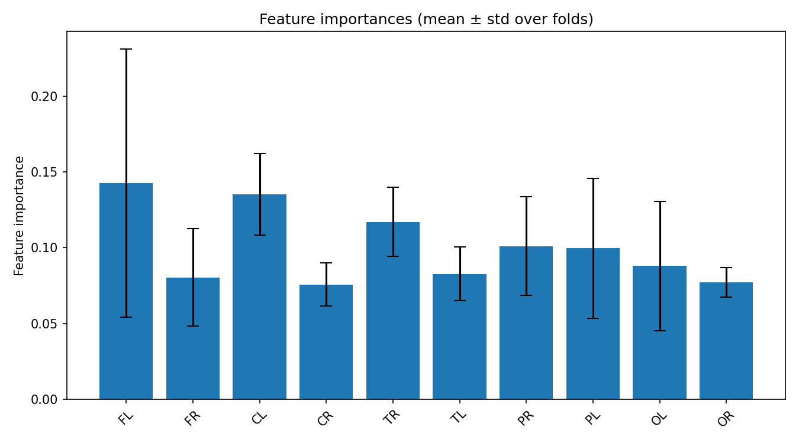
feature_importances_correlation_heatmap.png
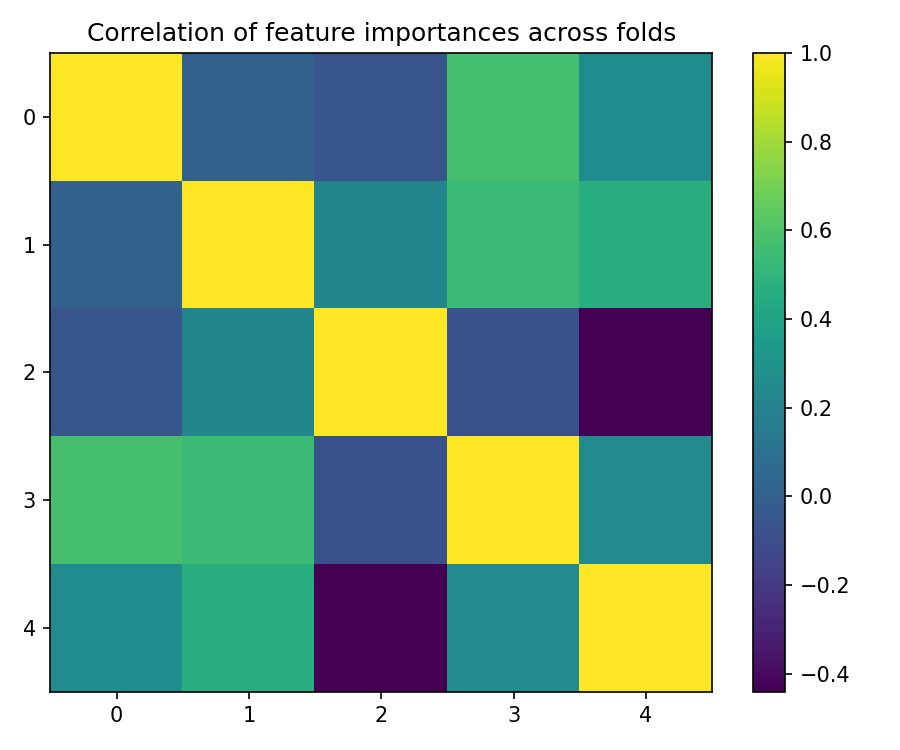
best_fold_5_feature_importances.png
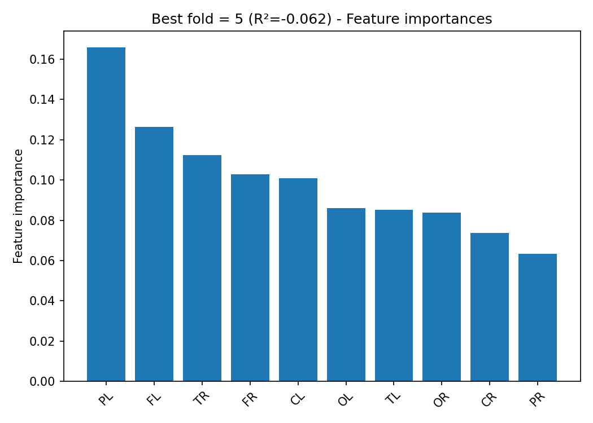
True vs Predicted Scatter Plots (by fold)
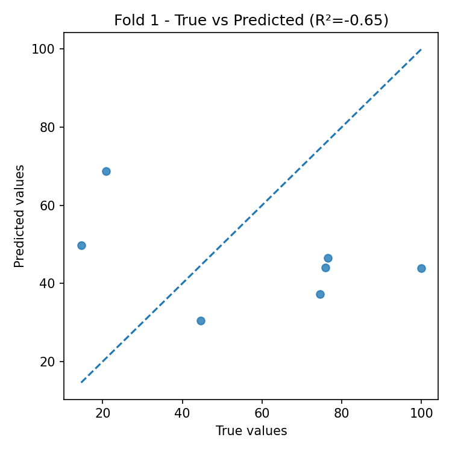
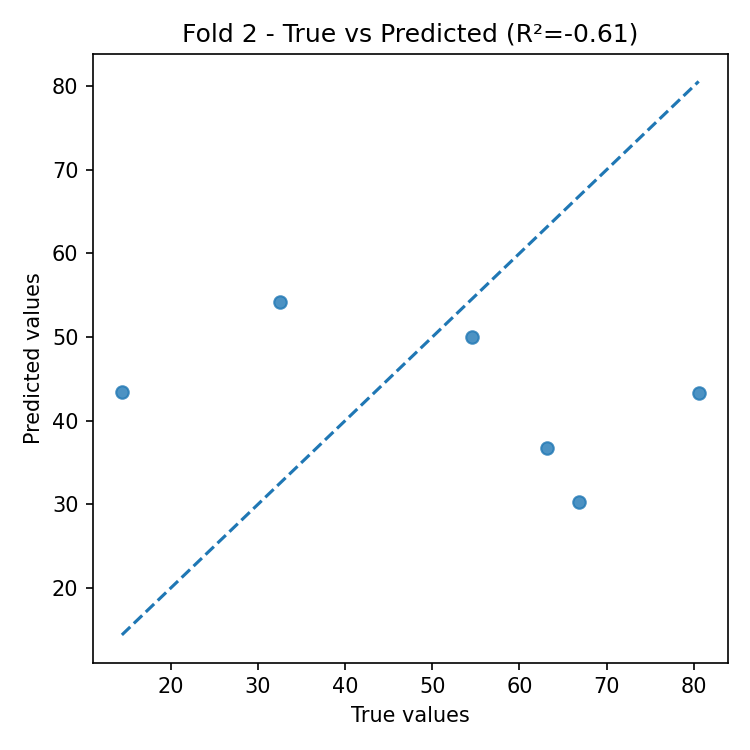
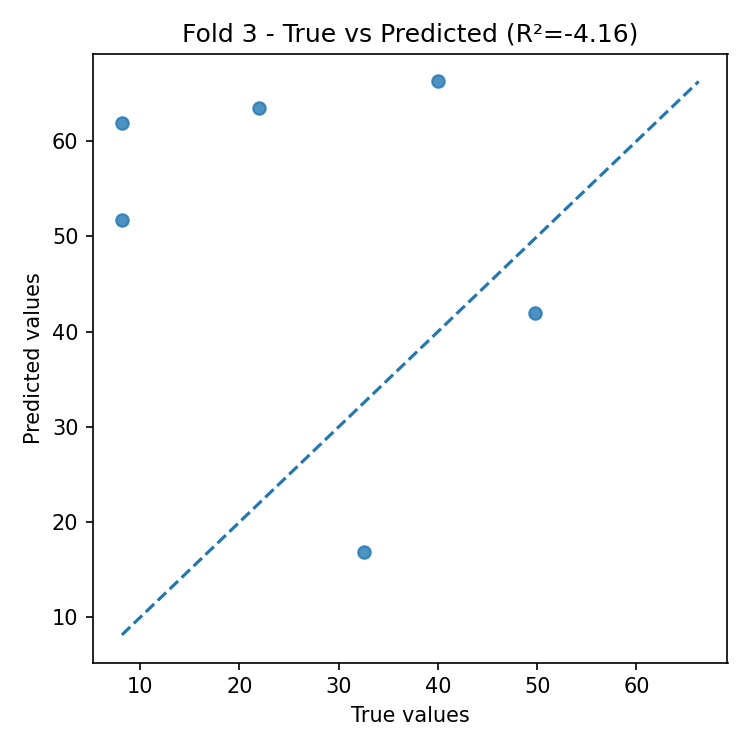
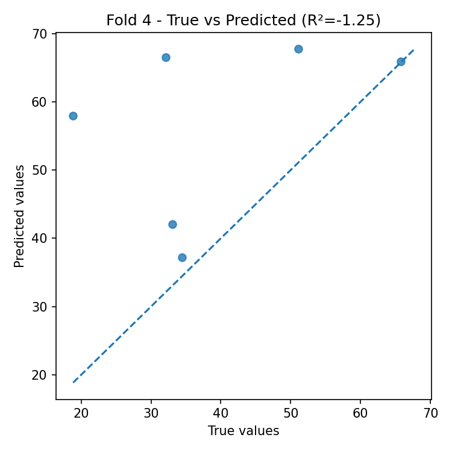
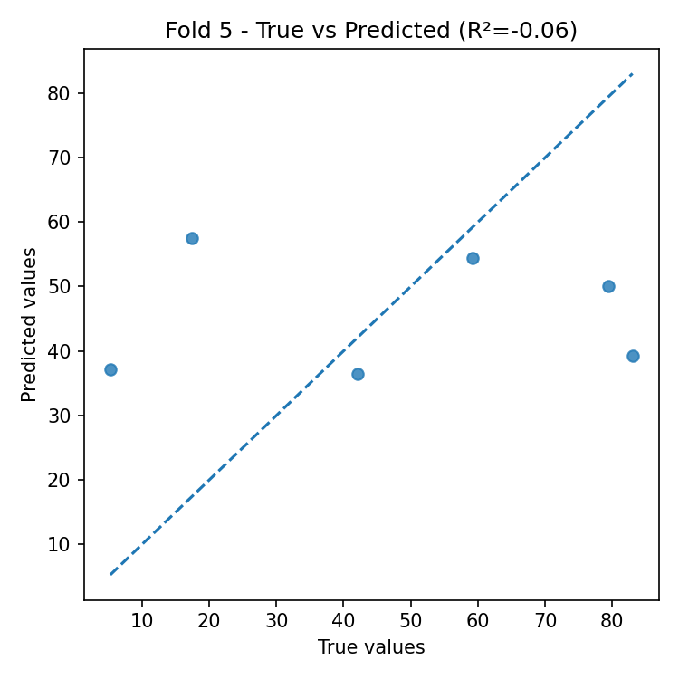
Residual Plots (by fold)
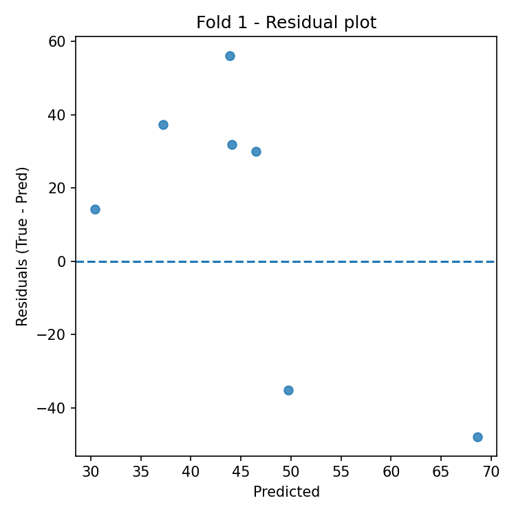
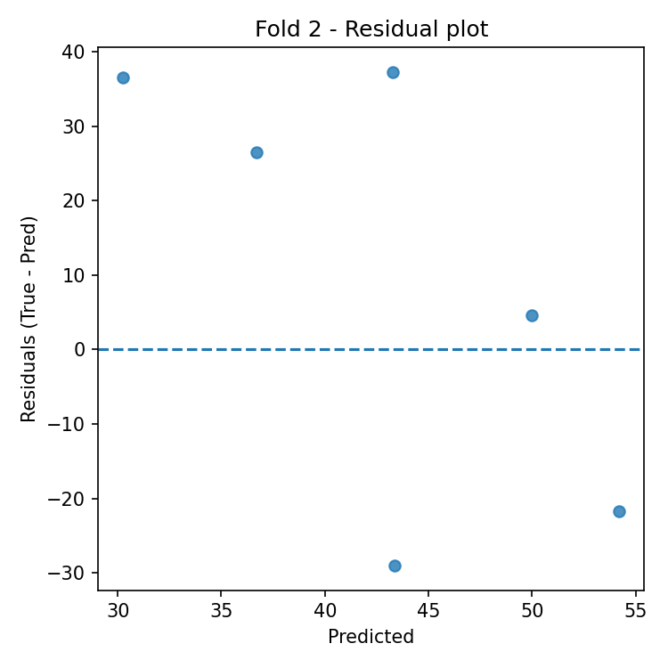
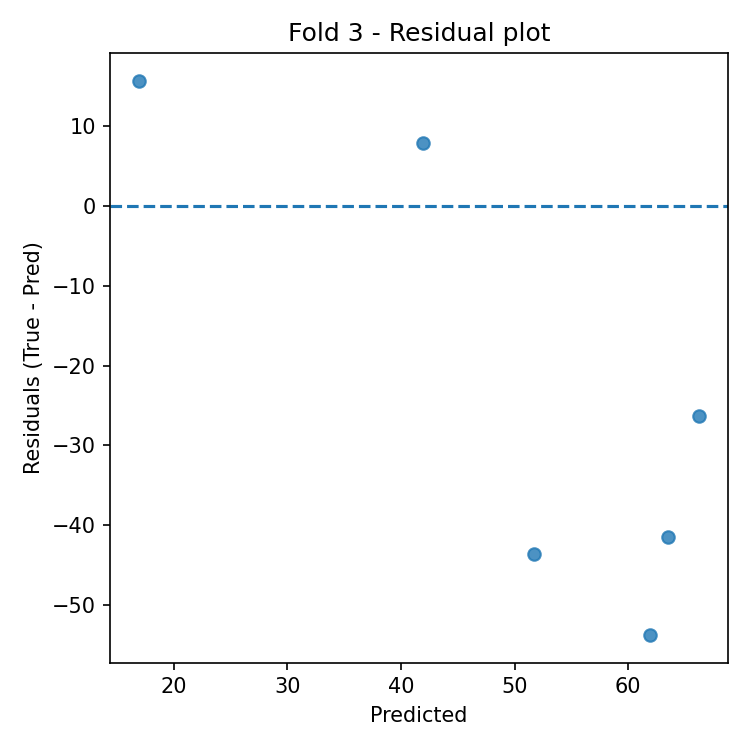
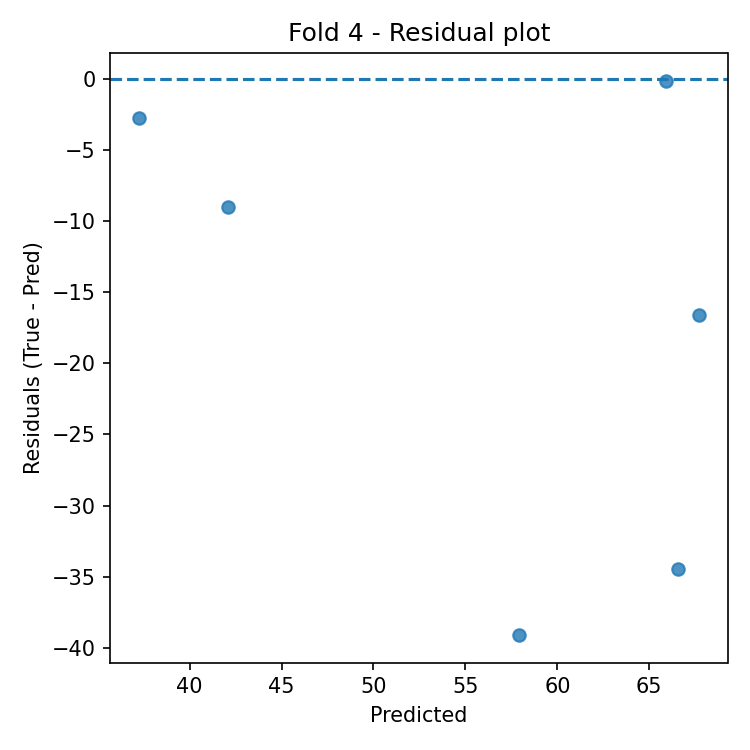
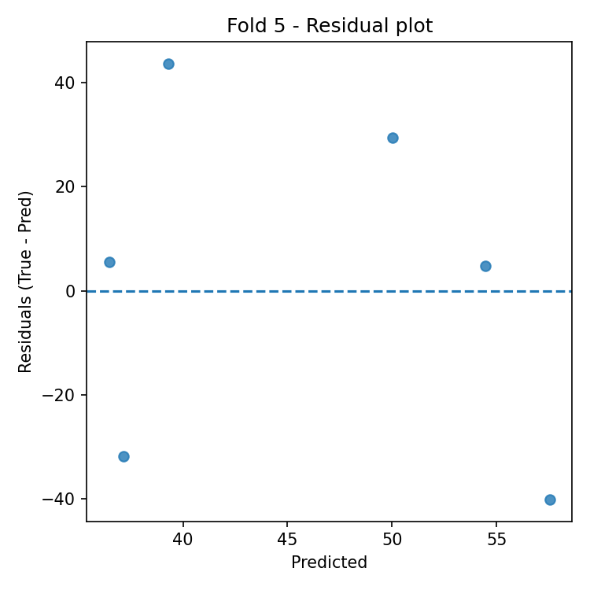
Automatic Interpretation
Overall Performance
- Mean R² across folds: -1.345 (± 1.627).
- Average error: RMSE = 30.895, MAE = 27.269 (same unit as target variable).
Model Stability
- R² variability across folds is high (std = 1.627).
- Average feature importance stability across folds: 0.033 (lower = more stable).
Most Important Features (average across all folds)
- Top-3: FL (0.143), CL (0.135), TR (0.117).
Best Fold
- Best fold: 5 with R² = -0.062.
- In the best fold, the most important features are: PL (0.166), FL (0.126), TR (0.112).
Residual Analysis (best fold)
- Residuals–predictions correlation: -0.238 (0 ≈ absence of linear bias).
- |Residuals|–predictions correlation: 0.027 (positive values indicate possible heteroscedasticity).
- Outliers (|res| > 3·std): 0.